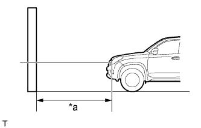
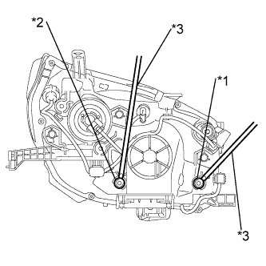

ФАРА В СБОРЕ (для моделей с газоразрядными фарами) > УСТАНОВКА |
| 1. УСТАНОВИТЕ ЛЕВУЮ ФАРУ В СБОРЕ |
Подсоедините разъемы.
Закрепите зажим.
Установите фару и закрепите ее болтом и 2 винтами.
| 2. УСТАНОВИТЕ ЛЕВОЕ УСИЛЕНИЕ ПЕРЕДНЕГО БУФЕРНОГО БРУСА |
Установите усиление переднего буферного бруса и закрепите его 2 винтами.
| 3. УСТАНОВИТЕ НАКЛАДКУ ПЕРЕДНЕГО БАМПЕРА |
Установите нижнюю накладку переднего бампера и закрепите ее 5 болтами и фиксатором.
| 4. УСТАНОВИТЕ РЕШЕТКУ РАДИАТОРА |
Установите решетку радиатора (Нажмите здесь).
| 5. ПОДСОЕДИНИТЕ ПРОВОД К ОТРИЦАТЕЛЬНОМУ ВЫВОДУ АККУМУЛЯТОРНОЙ БАТАРЕИ |
| 6. ПОДГОТОВЬТЕСЬ К РЕГУЛИРОВКЕ НАПРАВЛЕНИЯ СВЕТА ФАР (с использованием экрана) |
|  |
Подготовьте автомобиль следующим образом:
| *a | 25 или 3 м |
Приготовьте лист плотной белой бумаги (приблизительно 2 м (6,56 фута) (длина) x 4 м (13,1 фута) (ширина)) для использования в качестве экрана.
Проведите через центр экрана вертикальную линию.
Установите экран, как показано на рисунке.
 |
Начертите на экране главные оси (горизонтальную, правую и левую вертикальные линии), как показано на рисунке.
| *a | Левая вертикальная линия |
| *b | Вертикальная линия |
| *c | Правая вертикальная линия |
| *d | Горизонтальная линия |
| *e | Поверхность земли |
Горизонтальная линия (фара):
Начертите на экране горизонтальную линию так, чтобы она прошла через центральные метки. Горизонтальная линия должна располагаться на той же высоте, что и центральные метки ламп фар ближнего света.
Левая и правая вертикальные линии (для отметки центральных точек левой и правой фар):
Проведите две вертикальные линии таким образом, чтобы они пересекали горизонтальную линию на центральных метках (совпадают с центрами ламп фар ближнего света).
| 7. ПРОВЕРЬТЕ НАПРАВЛЕНИЕ СВЕТА ФАР |
Закройте фару на противоположной стороне или отсоедините ее разъем, чтобы свет от фары, которая не проверяется, не мешал регулировке направления света фары.
Запустите двигатель.
Включите фары и проверьте, совпадает ли граничная линия с предпочтительной граничной линией, показанной на следующем рисунке.
| 8. ОТРЕГУЛИРУЙТЕ ОРИЕНТАЦИЮ ПЕРЕДНИХ ФАР |
Фара ближнего света.
|  |
С помощью отвертки отрегулируйте направление света.
| *1 | Изменение направления света по вертикали |
| *2 | Изменение направления света по горизонтали |
| *3 | Отвертка |
Фара дальнего света.
 |
С помощью отвертки отрегулируйте направление света.
| *1 | Изменение направления света по вертикали |
| *2 | Изменение направления света по горизонтали |
| *3 | Отвертка |
| 9. ПОДГОТОВЬТЕСЬ К ПРОЦЕДУРЕ РЕГУЛИРОВКИ НАПРАВЛЕНИЯ СВЕТА ПРОТИВОТУМАННЫХ ФАР |
 |
Подготовьте автомобиль следующим образом:
| *a | 25 или 3 м |
Приготовьте лист плотной белой бумаги (приблизительно 2,0 м (6,56 фута) (длина) x 4,0 м (13,1 фута) (ширина)) для использования в качестве экрана.
Проведите через центр экрана вертикальную линию.
Установите экран, как показано на рисунке.
Начертите на экране главные оси (горизонтальную, правую и левую вертикальную линии), как показано на рисунке.
| *a | Левая вертикальная линия |
| *b | Вертикальная линия |
| *c | Правая вертикальная линия |
| *d | Горизонтальная линия |
| *e | Масса |
Горизонтальная линия (высота противотуманной фары):
Начертите на экране горизонтальную линию так, чтобы она прошла через центральные метки. Горизонтальная линия должна располагаться на той же высоте, что и центральные метки ламп противотуманных фар.
Левая и правая вертикальные линии (для отметки центральных точек левой и правой противотуманных фар):
Проведите две вертикальные линии таким образом, чтобы они пересекали горизонтальную линию на центральных метках.
| 10. ПРОВЕРЬТЕ НАПРАВЛЕНИЕ СВЕТА ПРОТИВОТУМАННЫХ ФАР |
Закройте противотуманную фару на противоположной стороне или отсоедините ее разъем, чтобы свет от противотуманной фары, которая не проверяется, не влиял на проверку направления света противотуманной фары.
Запустите двигатель.
Включите противотуманные фары и удостоверьтесь, что граничная линия находится в заданной зоне, как показано на рисунке.
| *A | Расстояние для регулировки: 25 м | *B | Расстояние для регулировки: 3 м |
| *a | Левая вертикальная линия | *b | Правая вертикальная линия |
| *c | Горизонтальная линия | - | - |
| 11. ОТРЕГУЛИРУЙТЕ НАПРАВЛЕНИЕ СВЕТА ПРОТИВОТУМАННЫХ ФАР |
Отрегулируйте направление света по вертикали.
| *1 | Винт регулировки |